Variable-Stability Fixed-Wing UAV with Telescoping Tail Boom
A tail boom that extends and retracts in flight changes the horizontal tail volume coefficient, so the same airframe can favour stability or agility. A battery carriage moves the opposite way to keep the centre of gravity in place.
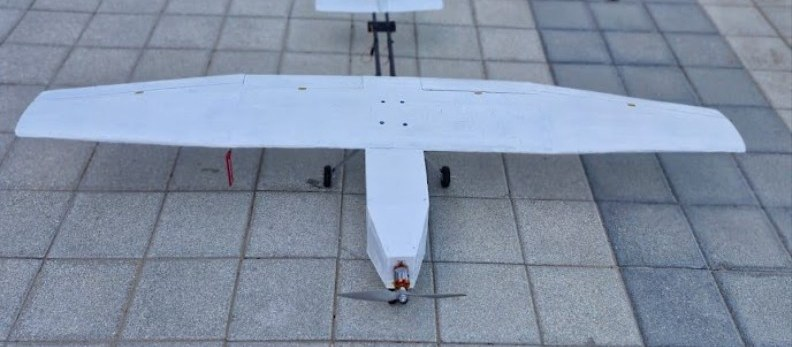
Interactive model
Loading 3D model…
- Tail arm
- 790 mm
- Tail volume coefficient
- 0.36
Drag to rotate, scroll or pinch to zoom, right-drag or two fingers to pan. The blue-grey parts are the tail group that slides. This is a simplified exterior model; internal structure and mechanisms are not shown. Between the end positions, tail volume coefficient is interpolated linearly across the design range (0.40 at the 100 mm midpoint).
CAD
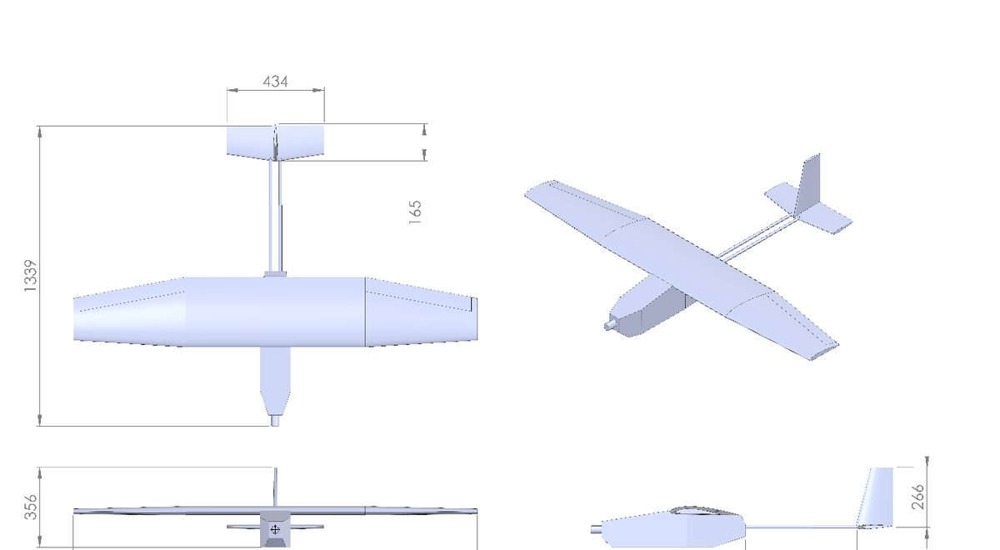
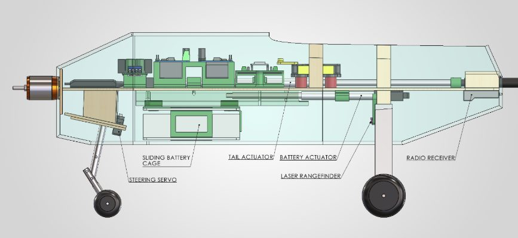
CFD results
3D CFD in ANSYS Fluent (k-omega SST, about 3.6M cells). The fuselage forebody was re-lofted after early runs showed a destabilising positive pitching-moment slope. Values below are at 15 m/s.
| Retracted | Extended | |
|---|---|---|
| Tail arm | 790 mm | 990 mm |
| Tail volume coefficient | 0.36 | 0.44 |
| Pitch stiffness dCm/dα | −0.0031 per deg | −0.0049 per deg |
| L/D at 0° angle of attack | 7.61 | 8.51 |
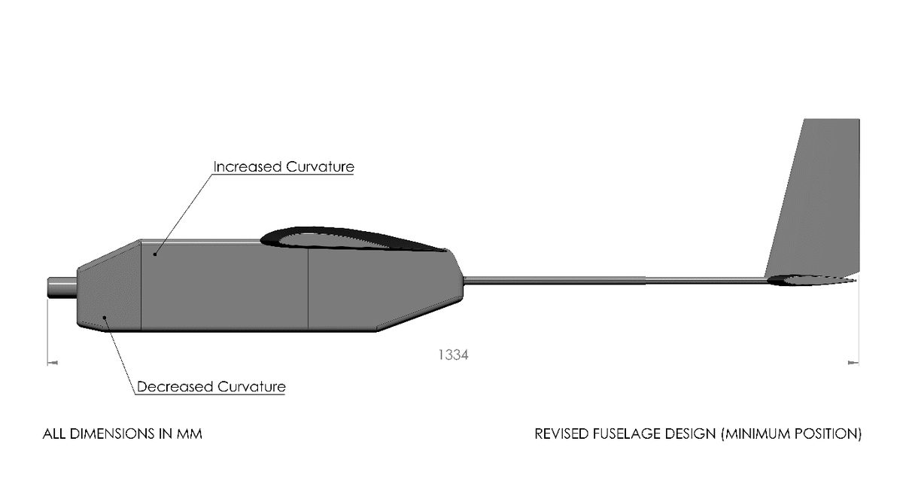
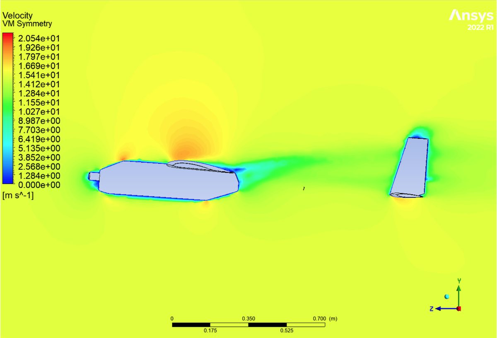
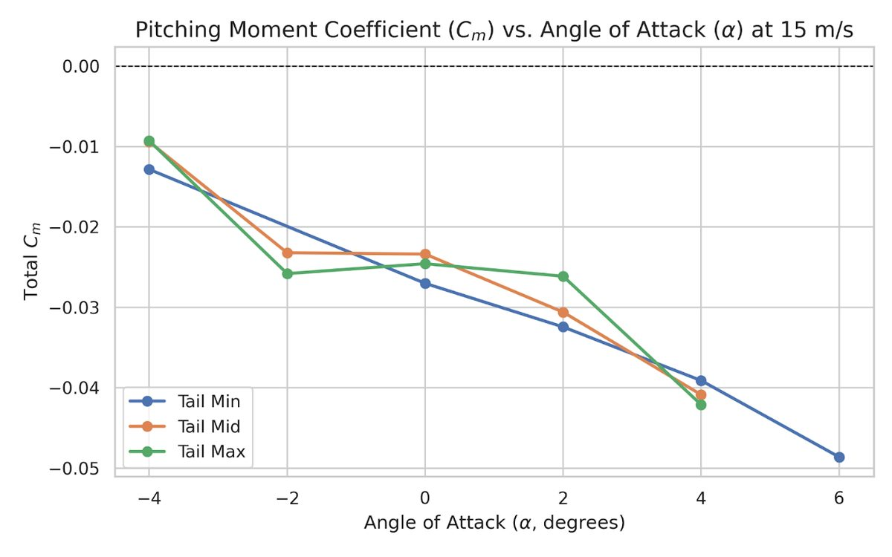
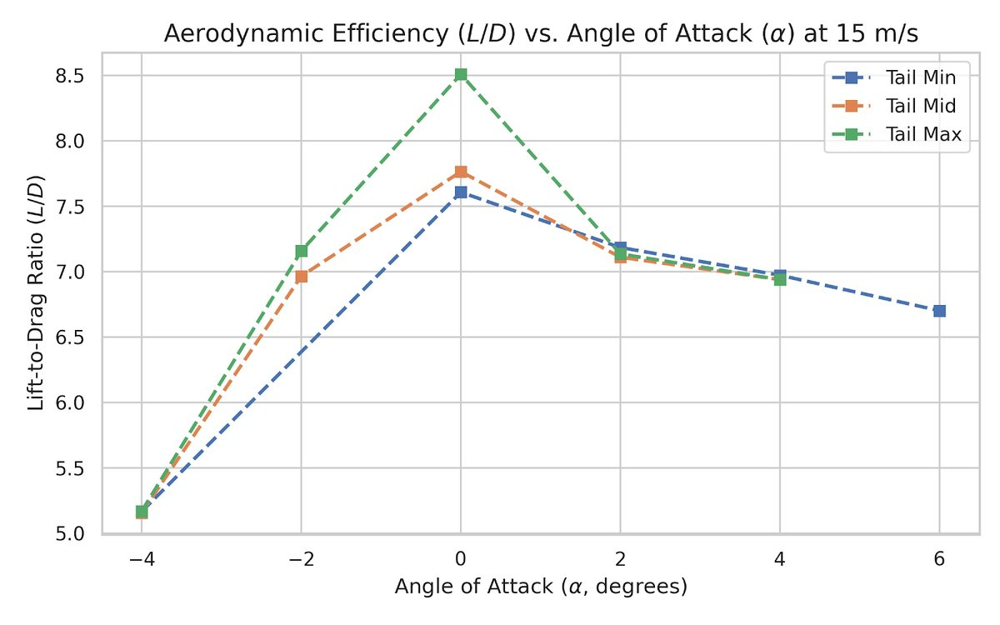
Design and analysis
- Wing
- 1.80 m span, aspect ratio 6.47, 0.501 m² area, Clark Y section
- Tail travel
- 200 mm stroke, driven by a 12 V linear actuator through nested carbon-fibre tubes
- CG compensation
- A second actuator, controlled by an ESP32, moves the 400 g battery carriage against the 260 g tail group. Modelled CG shift is limited to 6.16 mm over the full stroke.
- FEA, 3g limit load
- Wood wing spars (20 × 20 mm): minimum factor of safety 3.69, tip deflection 14.85 mm. Carbon tail boom: minimum factor of safety 21.7, tip deflection 4.99 mm.
- Avionics
- CoreWing F405-Wing V2 running ArduPlane, MS4525DO airspeed sensor, 4S 4400 mAh battery
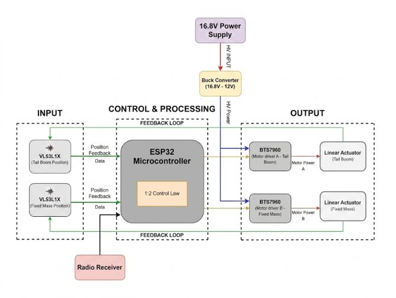
Build and status
The wing and tail surfaces are hot-wire-cut XPS foam with two plies of 30 GSM fibreglass, wood spars, 3D-printed PETG mounts and carbon-fibre booms. The airframe has been ground-tested at taxi speeds up to 5 m/s, with the control surfaces and both actuators cycled under propulsion vibration. Flight trials are pending GCAA airspace clearance, and a 25 Hz data logger is configured to measure autopilot pitch workload against tail extension once flights resume.
A copyright application has been filed for the design.
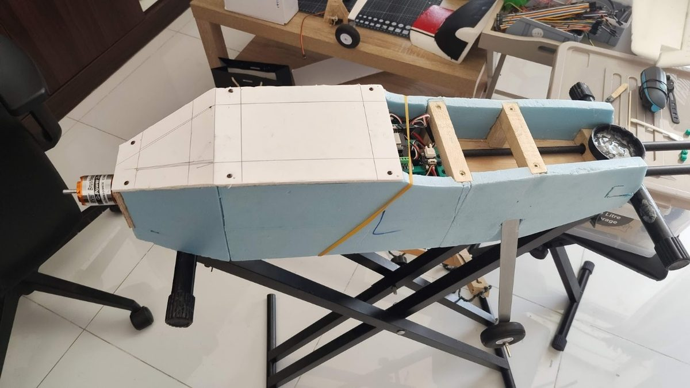
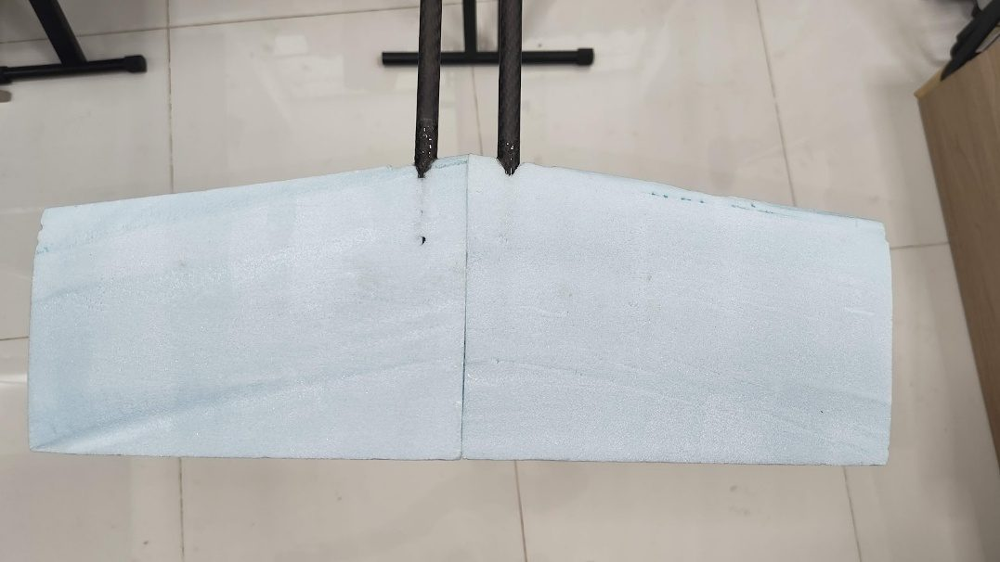
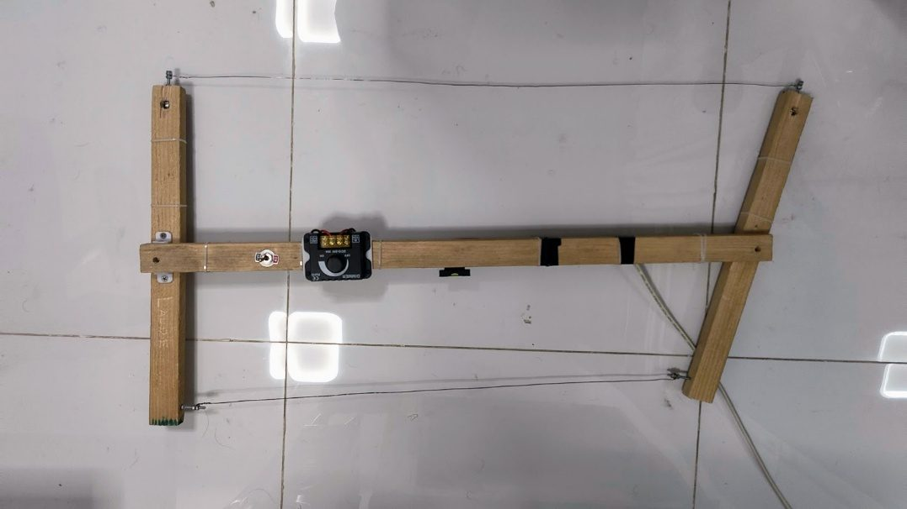
Paper
Armaan, M., Patwa, H. K., Prakasan, A. P., Raj, S., Pillai, S. Development of a Telescoping Boom Variable Stability Unmanned Aerial Vehicle. Presented at ASET 2026.